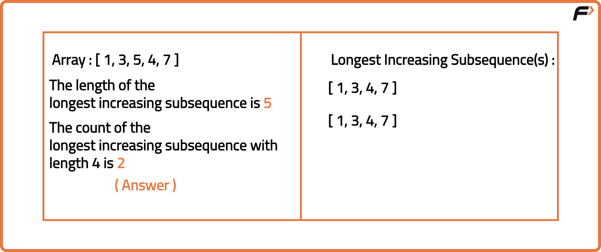
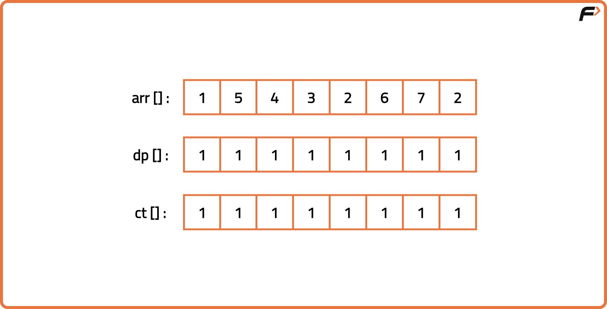
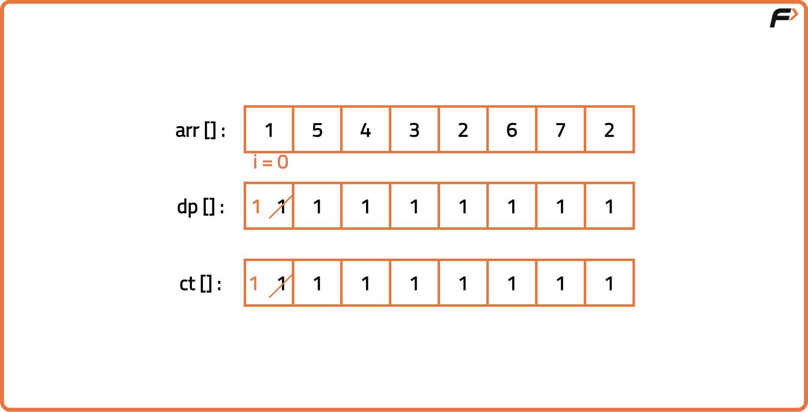
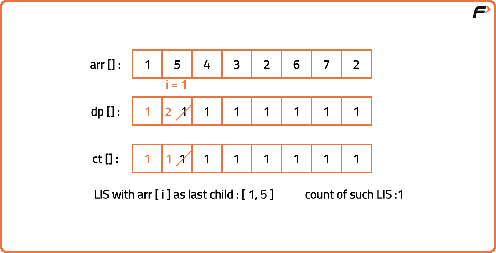
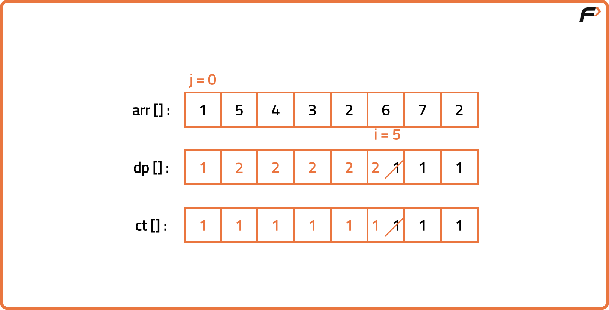
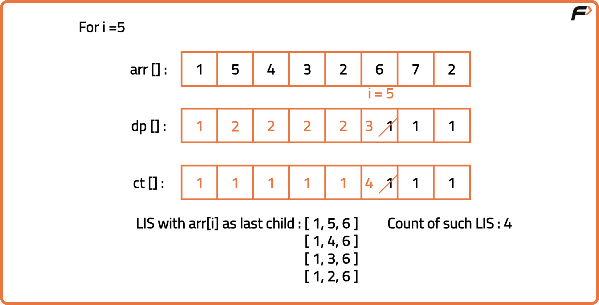
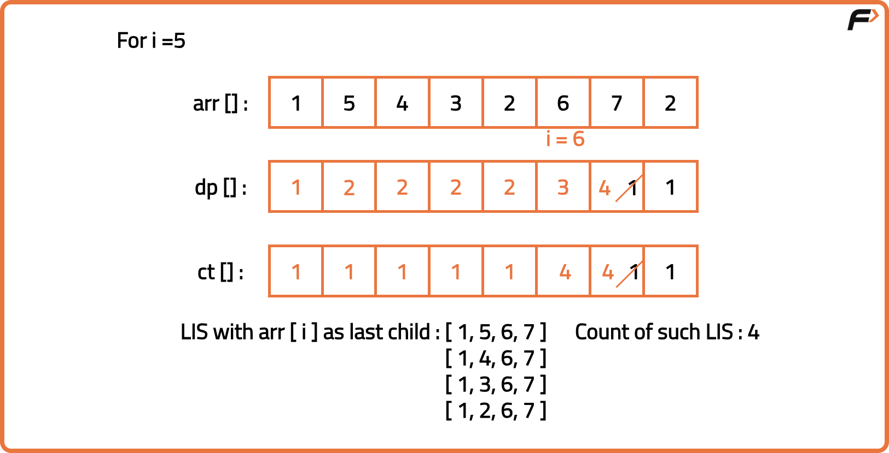

Number of Longest Increasing Subsequences | (DP-47)
Problem Description: Given an integer array nums, find the number of Longest Increasing Subsequences (LIS) in the array.
The Longest Increasing Subsequence (LIS) is the longest subsequence where all elements are in strictly increasing order.
Prerequisite:Longest increasing subsequence, Printing Longest Increasing subsequence
Examples
Input: nums = [1, 3, 5, 4, 7] Output: 2 Explanation: There are two LIS of length 4: [1, 3, 4, 7] and [1, 3, 5, 7].
Input: nums = [2, 2, 2, 2, 2] Output: 5 Explanation: All elements are the same, so every single element can form an LIS of length 1. There are 5 such subsequences.
Disclaimer: Here is the practice link to help you assess your knowledge better. It's highly recommend trying to solve it before looking at the solution.
Approach
Algorithm
In the normal LIS problem, we keep track of the length of the longest increasing subsequence ending at each element. However, when counting the total number of LIS, we also need to store how many such sequences of that length end at that element.
As we iterate through the array, if we find a longer subsequence for a position, we update its length and replace the count with the number of ways to form that new longer subsequence. If we instead find another subsequence of the same maximum length ending at that position, we add to the existing count to account for the new path.
In the end, we sum the counts of all elements whose LIS length matches the overall maximum length, giving us the total number of longest increasing subsequences in the array.
As we iterate through the array, if we find a longer subsequence for a position, we update its length and replace the count with the number of ways to form that new longer subsequence. If we instead find another subsequence of the same maximum length ending at that position, we add to the existing count to account for the new path.
In the end, we sum the counts of all elements whose LIS length matches the overall maximum length, giving us the total number of longest increasing subsequences in the array.
- Start by preparing two separate lists, one to store the lengths of the increasing subsequences ending at each position, and another to store how many such subsequences exist for that position.
- Initially, set the length at each position to 1 (since a single element itself is a valid subsequence) and the count at each position to 1 (since there is at least one such subsequence of length 1).
- For each position in the sequence, compare it with all previous positions. If the previous element is smaller and using it leads to a longer subsequence, update the length for the current position and set its count equal to the count from that previous position.
- If the previous element is smaller and using it leads to a subsequence of the same maximum length as already stored for the current position, add the count from the previous position to the current position’s count.
- After processing all positions, find the largest length value. This is the length of the longest increasing subsequence.
- Sum up the counts of all positions whose length matches the maximum length. This total represents the number of longest increasing subsequences.






Code
#include <bits/stdc++.h>
using namespace std;
// Class containing the method to find the count of Longest Increasing Subsequences
class Solution {
public:
// Method to calculate the count of LIS
int findNumberOfLIS(vector<int>& arr) {
// Store the size of the input sequence
int n = arr.size();
// Store the length of the increasing subsequence ending at each position
vector<int> dp(n, 1);
// Store the count of increasing subsequences ending at each position
vector<int> ct(n, 1);
// Track the maximum subsequence length found so far
int maxi = 1;
// Loop through each position in the sequence
for (int i = 0; i < n; i++) {
// Compare the current position with all previous positions
for (int j = 0; j < i; j++) {
// If an increasing sequence is found that is longer than the current best for this position
if (arr[j] < arr[i] && dp[j] + 1 > dp[i]) {
// Update the best subsequence length for this position
dp[i] = dp[j] + 1;
// Reset the count to match the source subsequence count
ct[i] = ct[j];
}
// If an increasing sequence of the same best length is found
else if (arr[j] < arr[i] && dp[j] + 1 == dp[i]) {
// Add the count of subsequences from the previous position
ct[i] = ct[i] + ct[j];
}
}
// Update the global maximum subsequence length if needed
maxi = max(maxi, dp[i]);
}
// Store the total number of subsequences of maximum length
int countLIS = 0;
// Sum the counts of all positions where the length equals the maximum length
for (int i = 0; i < n; i++) {
if (dp[i] == maxi) {
countLIS += ct[i];
}
}
// Return the total number of longest increasing subsequences
return countLIS;
}
};
int main() {
// Define the input sequence
vector<int> arr = {1, 5, 4, 3, 2, 6, 7, 2};
// Create an object of Solution class
Solution sol;
// Output the total count of longest increasing subsequences
cout << "The count of Longest Increasing Subsequences (LIS) is "
<< sol.findNumberOfLIS(arr) << endl;
return 0;
}
Complexity Analysis
Time Complexity: O(N^2), for each element, we compare it with all previous elements to check if it can extend an increasing subsequence.Space Complexity: O(N), space used to store length array and count array array.